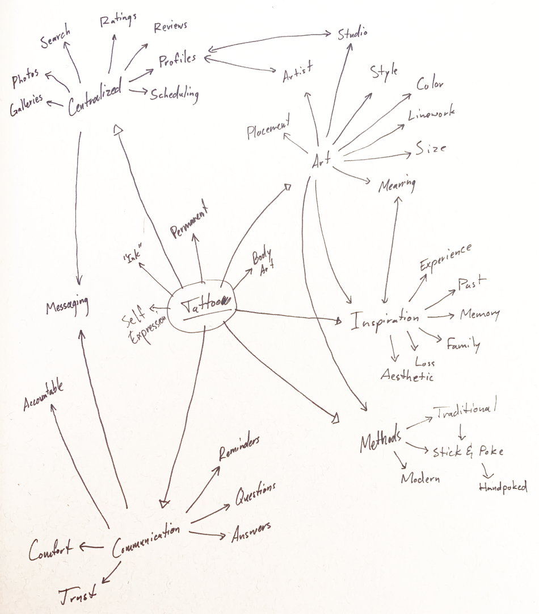
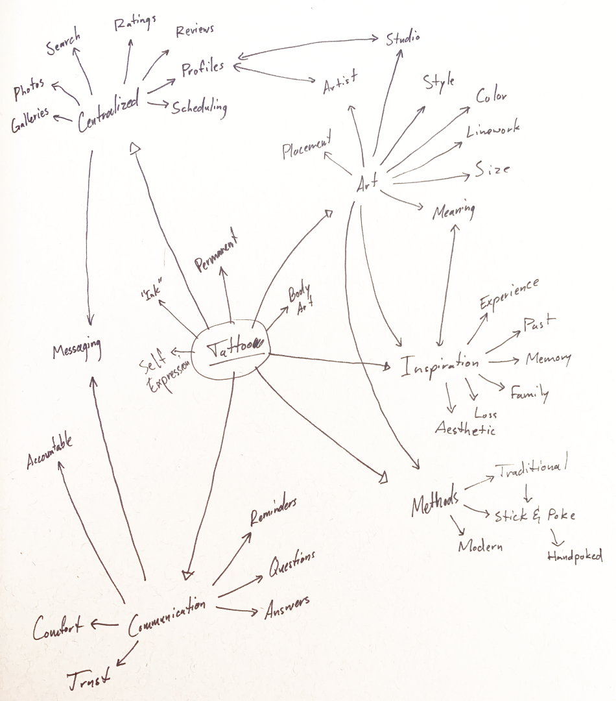

Primary Research
Of course, going into this project I only had my own tattoo experiences to go off of so I started the process by formally interviewing people with tattoos. I also had several informal conversations with some additional people regarding their tattoo experiences.
This project needed to move pretty quickly, so I only had one week to get interviews done. Unfortunately, that means that I could only get 3 interviews. I would have preferred at least twice that many, and if the scope of the project had allowed I would have also interviewed tattoo artists. That's definitely a major fault, here. Without the input of artists themselves, this project is largely speculative as it can only account for the customer's perspective.
My experiences getting tattoos have been varied. One experience was very in-depth and communicative, I felt taken care of but, at the same time, didn't see my artwork until the day I showed up for my appointment. However, my first tattoo went quickly: I walked in, showed the artist my reference photo, he gave me the tattoo (painfully), and I was out in about half an hour; I found out later that he'd done the tattooing part poorly. Another experience was also poor: the artist was charismatic but his tattoo abilities were lackluster and I ended up having to get the tattoo covered. My other tattoos have fallen somewhere in between where the tattoos came out good but the process felt like a business transaction: impersonal.
Of course, I would need some more information than simply my own experiences. I wanted to speak with a younger audience: 18-35. I also decided I would speak with both women and men, and felt that if I could speak with people with many tattoos, people with only one or two, and preferably people with relatively recent tattoo experiences then the forthcoming conversations would be much more informative.
My interviews gave me a lot of usable information. First, I was able to confirm some of my assumptions:
- The “problems” typically end once the tattooing process starts (with obvious exceptions)
- The experience overall is very personal, from the meaningfulness of the artwork to the aftercare routine which follows
- Approaching an artist for the first time is a source of anxiety
- Too many different websites
I also quickly found some common paint points across all of my interviews:
- Lack of timely communication
- Too much information about tattooing from different sources
- Not seeing artwork until late in the process
- Artwork isn’t always as expected
Finally, some of my new discovery included:
- The most important parts of getting a tattoo are: an artist who communicates, answers questions, asks questions, and welcomes feedback, feeling comfortable with the artist and in the space in which they work
- The first tattoo is the most important, a “make or break” situation
- Being tattooed is very meditative; although there may be pain it isn’t necessarily a painful experience
- Very rarely do people leave a review or go out of their way to comment on their experience
- There’s always an understanding that quality tattoos come with a certain cost so this isn’t usually a concern

 
